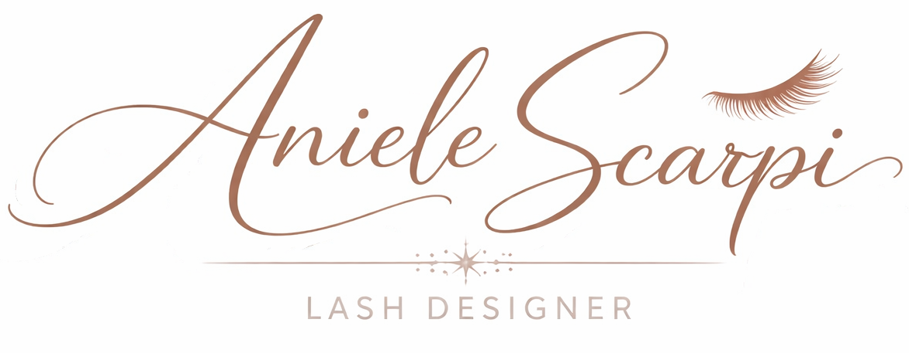
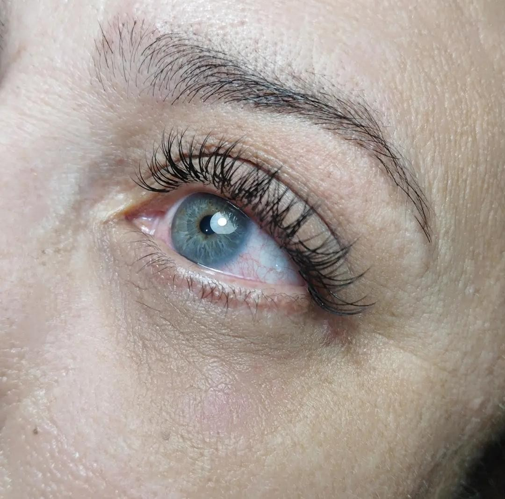
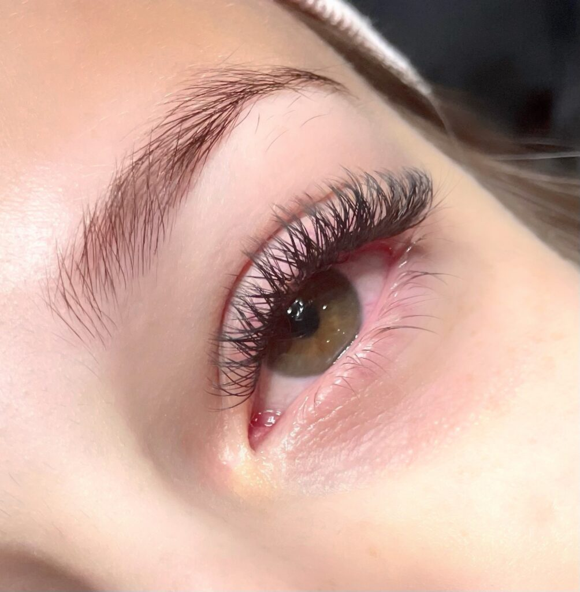
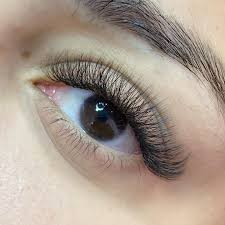
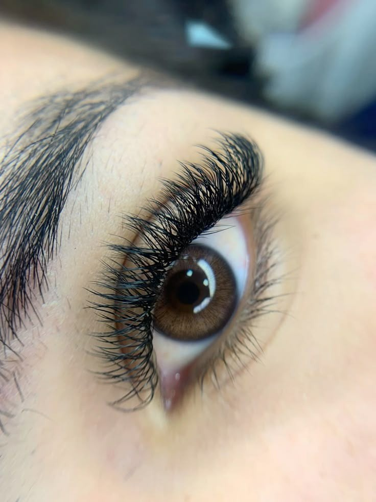
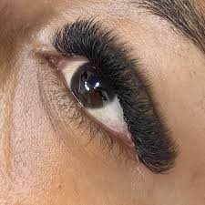

O clássico fio a fio é uma técnica de extensão de cílios que realça a beleza natural de forma delicada e elegante. Nesse método, é aplicado um fio sintético em cada cílio natural. O resultado é leve, discreto e natural, ideal para quem deseja apenas alongar e definir os cílios no dia a dia.
Tempo mínimo: 2h.

O volume brasileiro utiliza fios em formato de “Y”, permitindo maior preenchimento dos cílios de forma prática e uniforme. O resultado é um olhar mais volumoso e definido, com leveza, sendo uma ótima opção para quem quer mais destaque no dia a dia.
Tempo mínimo: 2h.

O volume egípcio cria um efeito alinhado, elegante e com boa densidade. São utilizados fãs leves em formato de W 3D, que proporcionam volume com acabamento mais organizado. O resultado é um olhar marcante, porém sofisticado, sem excesso.
Tempo mínimo: 2h.

O volume inglês é uma técnica que proporciona um efeito mais cheio, intenso e bem definido. São aplicados fios finos em formato de W 5D em cada cílio natural, formando fãs mais densos. O resultado é um olhar marcante, volumoso e elegante, ideal para quem gosta de bastante destaque nos cílios.
Tempo mínimo: 2h.

É uma técnica de extensão de cílios que proporciona um efeito extremamente volumoso, cheio e marcante. Nessa técnica, são utilizados fios em formato de W 8D, permitindo maior densidade em cada aplicação. O resultado é um olhar intenso, glamouroso e bem destacado, com bastante preenchimento e definição. Mesmo com alto volume, os fios são leves, garantindo conforto e boa durabilidade. Essa técnica é ideal para quem gosta de cílios bem volumosos, com efeito de maquiagem pronta, perfeito para ocasiões especiais ou para quem prefere um visual mais impactante no dia a dia.
Tempo mínimo: 2h.
Sou Aniele Scarpi, Lash Designer dedicada a transformar olhares com delicadeza, técnica e muito carinho. Escolhi essa profissão porque amo ver a felicidade de cada cliente ao se olhar no espelho. Busco oferecer um atendimento personalizado, entendendo o estilo e o desejo de cada pessoa para criar um resultado que realce sua beleza natural. Meu compromisso é fazer com que cada cliente saia do estúdio se sentindo mais bonita, confiante e especial.